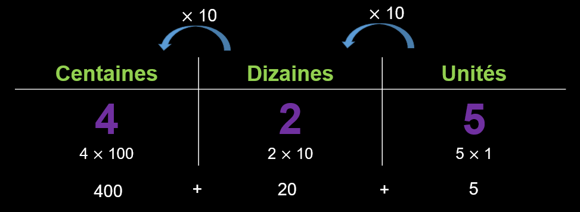
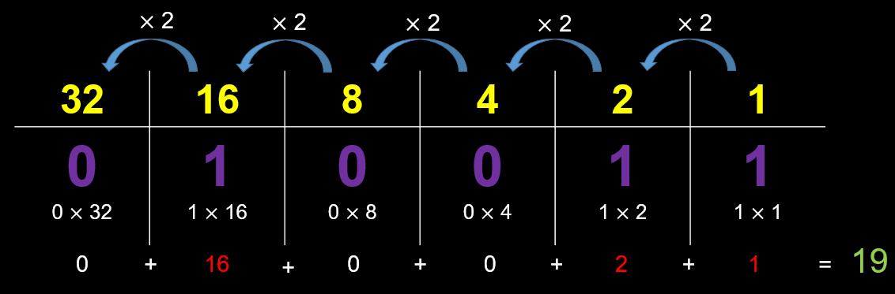

Sais-tu comment les ordinateurs pensent?
Les ordinateurs transforment toutes les informations comme les images ou les mots en nombres.
Ces nombres sont uniquement composés de 0 et de 1
On peut voir le 0 comme un interrupteur ouvert (qui ne conduit pas le courant)
Ces nombres sont uniquement composés de 0 et de 1
Et on peut voir le 1 comme un interrupteur fermé (qui conduit le courant)
Ces nombres sont uniquement composés de 0 et de 1
On dit que cette façon de compter est un système binaire!
|
Comment comptent les humains |
Décimal | Binaire |
Comment comptent les ordinateurs 
|
| 0 | 0 | ||
| 1 | 1 | ||
| 2 | 10 | ||
| 3 | 11 | ||
| 4 | 100 | ||
| 5 | 101 | ||
| 6 | 110 | ||
| 7 | 111 | ||
| 8 | 1000 | ||
| 9 | 1001 | ||
| 10 | 1010 |
|
Comment comptent les humains |
Décimal | Binaire |
Comment comptent les ordinateurs
|
| 0 | 0 | ||
| 1 | 1 | ||
| 2 | 10 | ||
| 3 | 11 | ||
| 4 | 100 | ||
| 5 | 101 | ||
| 6 | 110 | ||
| 7 | 111 | ||
| 8 | 1000 | ||
| 9 | 1001 | ||
| 10 | 1010 |
Si tu as 9 ans dans le système décimal, tu as en fait 1001 ans pour un ordinateur
Comment ça marche ?
Dans le système décimal on multiplie par 10 à chaque fois que l’on ajoute une colonne!
Comment ça marche ?
Dans le système binaire on multiplie par 2 à chaque fois que l’on ajoute une colonne!
On peut donc dire que
19 en notation décimale
vaut
10011 en notation binaire
C'est à toi d'essayer !!

Clique sur le bouton SUIVANT en haut pour continuer